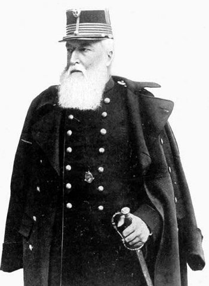
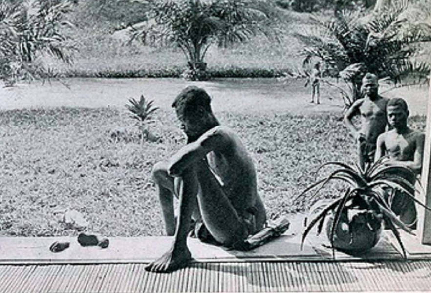
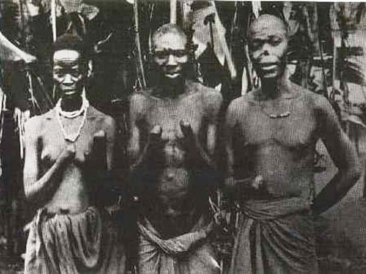
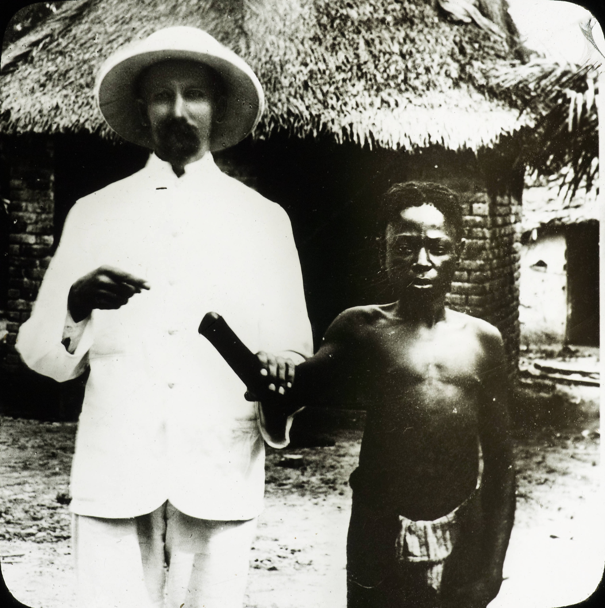
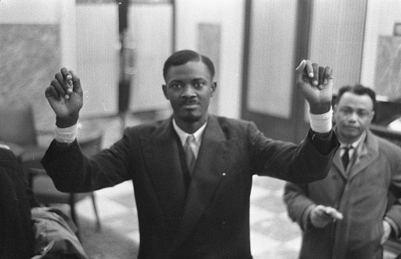

1885 - 1908
O Estado Livre do Congo não era uma colônia belga, mas uma propriedade pessoal do Rei Leopoldo II. Sob o pretexto de uma missão humanitária, ele instaurou um regime de trabalhos forçados para a extração de borracha e marfim, resultando na morte de milhões de congoleses.


Com a invenção do pneu pneumático, a borracha tornou-se o recurso mais valioso do mundo. Aldeias inteiras eram obrigadas a cumprir cotas de coleta sob pena de morte ou sequestro de mulheres e crianças.

Para economizar munição, a Force Publique exigia uma mão decepada para cada bala gasta. Isso gerou um comércio macabro de membros humanos para justificar o uso de armas aos oficiais europeus.

Roger Casement e E.D. Morel expuseram as atrocidades ao mundo. O relatório de 1904, com fotos chocantes de missionários, forçou Leopoldo II a ceder o Congo ao governo da Bélgica.

Em 1960, Patrice Lumumba declarou a independência. Rompendo o protocolo, denunciou em discurso a "humilhante escravidão" sofrida pelo povo congolês sob o domínio belga.